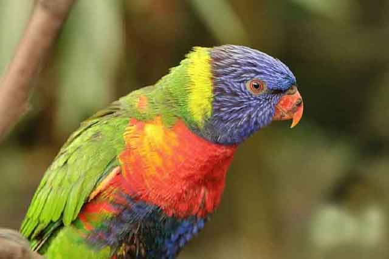

앵무새의 수명은 얼마나 될까요?
강아지, 고양이, 고슴도치 등 사람들이 주로 키우는 반려동물이지만, 앵무새를 키우는 분들도 상당히 많은 편에 속해 이에 대한 관심이 많습니다. 보통 가정에서 키우는 반려동물의 평균 수명은 많게는 20년, 적게는 10년 내외로 사람의 평균 수명 비교해 보자면 짧은 편에 속합니다. 그래서 요즘은 반려동물을 키울 때 고려하는 부분 중 하나가 수명입니다. 키우기 시작한 순간부터 오랜 시간을 함께 했으면 하는 사람들의 바람이겠죠.
강아지, 고양이만큼 많이 키우는 동물 중 하나가 바로 '앵무새'입니다. 영화나 드라마 속에서 흔히 사람의 말을 따라 할 수 있다고 해서 유명해진 새죠. 앵무새는 품종이 다양합니다. 그래서 사육하는 방법 또한 다양하고, 품종에 대한 이해가 충분해야 합니다. 초보자의 경우에는 어려운 품종을 택하기보다는 비교적 쉬운 품종을 택해서 사육하는 경험을 더욱 폭넓게 기르는 것이 좋습니다.
특히, 앵무새를 기를 때 주의해야 할 점은 바로 '수명'입니다. 다른 반려동물과 달리 앵무새의 평균 수명은 상당히 긴 편입니다. 품종에 따라 조금씩 차이는 있지만, 짧게는 20년부터 길게는 80년까지 이릅니다. 앵무새의 크기가 크면 클수록 사람처럼 오래 삽니다. 그래서 처음에 품종을 선택할 때 앵무새의 삶을 평생 책임질 수 있다는 것을 가정하고 반려동물로 키울 수 있어야 합니다.
예를 들면, 대형 앵무새에 속하는 '코카투'는 평균 수명이 80살이라고 합니다. 사육 환경이 좋다면, 그 이상도 살 수 있다고 하네요. 사람 손을 타기 시작한 반려동물은 야생으로 나가 살아남기가 힘듭니다. 결국, 평생을 책임져야 할 생각으로 키우기 시작해야 합니다. 기르던 주인이 홀연 떠나버리거나 사라진다면, 반려동물은 혼자 남는 상황이 발생하겠죠. 따라서 반려동물로 앵무새를 고려했다면, 수명까지도 충분히 고려해야 합니다.
만약, 사람 수명만큼 긴 수명을 가진 앵무새를 키우기로 했다면 주인이 세상을 떠난 후에도 앵무새가 혼자 남지 않도록 미리 계획을 세워두고 반려동물로 들여야 합니다. 그리고 그 긴 세월 동안 정성 들여 키워야 하는 것은 당연한 이야기일 것입니다. 앵무새는 장난과 애교가 많은 동물로도 유명합니다. 사람과의 교감은 선택 아닌 필수라고 할 수 있겠죠!
앵무새의 지능은 3~4살 어린아이 정도라고 합니다. 그리고 평균 수명은 10년부터 80년까지 다양합니다. 사람 수명만큼 긴 시간을 들여 어린아이를 키운다는 생각으로 책임감 있게 반려동물을 들여야 합니다. 단순히 재미로 시작해서는 안 된다는 것입니다. 모든 반려동물을 키울 때는 단순한 흥미로 시작해서는 안 되겠지만, 특히 수명이 긴 앵무새라면 더욱더 신중하고 주의를 기울여야 할 것입니다!
[출처] 앵무새의 수명은 얼마나 될까요? ｜ 작성자 까망이